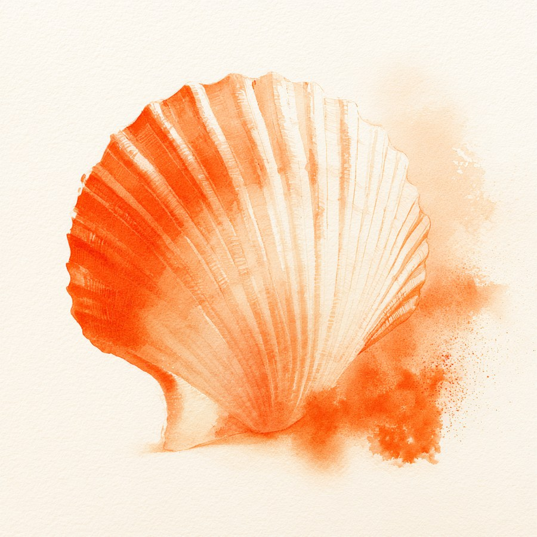

Noch mehr.
In der Akte ist es ein Wort. In deinem Leben ist es viel mehr.
Dein Körper stellt sich nicht an. Er schützt dich.

Wie es sich anfühlt
Du liegst auf dem Stuhl. Jemand sagt: „Entspannen Sie sich."
Du willst ja. Du versuchst es wirklich.
Aber dein Körper hat längst entschieden. Er macht zu. Ohne dich zu fragen.
Und irgendwann liegst du abends wach und denkst: Mit mir stimmt etwas nicht.
Die Wahrheit
Vaginismus ist keine Einbildung. Keine Verweigerung. Kein Defekt.
Es ist ein Schutzreflex, der sich verselbstständigt hat. Ein Körper, der gelernt hat: Hier droht Schmerz. Und der seitdem schneller ist als jeder Wille.
Das ist kein Defekt. Das ist ein Körper, der verdammt gut aufgepasst hat.
Der medizinische Blick
In der Akte steht: Vaginismus — die unwillkürliche Anspannung der Beckenbodenmuskulatur. Sie macht Penetration schmerzhaft oder unmöglich. Beim Sex. Beim Tampon. Bei der gynäkologischen Untersuchung.
Scheidenkrampf nennt man das umgangssprachlich. Medizinisch: Vaginismus.
Die Medizin fasst das heute mit Schmerzen beim Sex zusammen. Ein Begriff: genito-pelvine Schmerz-Penetrationsstörung. Weil beides denselben Kreislauf teilt:
Angst → Anspannung → Schmerz → mehr Angst.
Dieser Kreislauf ist der eigentliche Gegner. Nicht dein Körper. Nicht du.
Und wichtig: Manchmal liegt hinter dem Schmerz auch etwas Körperliches. Eine Narbe. Eine Hautveränderung. Eine Infektion. Ein Hormonmangel. Deshalb gehört an den Anfang immer ein ärztlicher Blick. Nicht, weil etwas Schlimmes dahinterstecken muss. Sondern damit nichts übersehen wird.
Vier Sätze, die du vielleicht denkst
„Ich bin zu eng."
Bist du nicht. Anatomisch ist bei Vaginismus fast immer alles unauffällig. Es ist Muskulatur, die schützt — nicht Anatomie, die falsch ist.
„Ich stelle mich an."
Ein Reflex fragt nicht nach Erlaubnis. Du kannst ihn so wenig „einfach lassen" wie das Blinzeln, wenn etwas auf dein Auge zufliegt.
„Ich bin die Einzige."
Du kennst nur niemanden, der darüber spricht. Vaginismus gehört zu den häufigsten Gründen, warum Frauen in sexualmedizinische Beratung kommen — und zu den Themen mit der größten Dunkelziffer. Viele Frauen tragen es jahrelang allein. Manche eine ganze Ehe lang.
„Das geht nie wieder weg."
Vaginismus gehört zu den am besten behandelbaren sexuellen Störungen überhaupt. Die Forschung ist da eindeutig: In einer aktuellen Auswertung von 18 Studien mit über 850 Frauen lag die Erfolgsrate je nach Methode bei rund 80 bis 86 Prozent. Mehr als vier von fünf Frauen. Nicht über Nacht. Aber verlässlich — wenn Körper, Kopf und Beziehung gemeinsam gedacht werden.
Woher es kommt
Manchmal war es immer da. Der erste Tampon, der erste Versuch — der Körper hat von Anfang an Nein gesagt.
Manchmal kommt es später. Nach einer schmerzhaften Untersuchung. Nach Infektionen, die sich eingebrannt haben. Nach Erfahrungen, die niemand hätte machen dürfen.
Und manchmal beginnt es im Kreißsaal. Eine Geburt, die Spuren hinterlassen hat. Eine Naht, die länger schmerzte als versprochen. Ein Körper, der seitdem sagt: Da nicht mehr.
→ Wenn dein Körper seit der Geburt nicht mehr loslässt: Sexual-Therapie nach der Geburt
Die Begleitung
Kein Programm von der Stange. Aber damit du weißt, was dich erwartet — die Bausteine, aus denen wir deinen Weg zusammensetzen:
Was in deinem Körper passiert. Warum er tut, was er tut. Allein das nimmt vielen Frauen den Druck.
Als Ärztin weiß ich, was körperlich untersucht gehört — und was die Befunde bedeuten. Die Untersuchung selbst erfolgt bei deiner Gynäkologin vor Ort, in deinem Tempo. Ich bereite dich darauf vor und ordne mit dir ein, was dabei herauskommt.
Beckenboden wahrnehmen. Anspannung spüren. Loslassen üben. Schritt für Schritt, in Übungen, die du selbst steuerst. Niemand außer dir bestimmt das Tempo.
Vaginismus betrifft selten nur eine Person. Da ist oft ein Partner, der sich zurückgezogen hat. Schuldgefühle auf beiden Seiten. Sex, der zum Minenfeld wurde. Auch das darf hier Platz haben — gemeinsam oder erstmal allein.
Und wenn eine Geschichte dahinterliegt: Dann schauen wir sie an. Behutsam. Erst dann, wenn du so weit bist.
Nichts davon passiert gegen deinen Willen.
Nichts davon musst du können, bevor du anfängst.
Drei Blickwinkel, eine Begleitung
Vaginismus sitzt genau an der Stelle, an der drei Welten sich treffen: Medizin. Sexualität. Beziehung.
Deshalb erleben viele Frauen eine Odyssee — von der Gynäkologin zur Physiotherapie zur Psychotherapie und zurück. Überall ein Teil der Wahrheit. Nirgends das Ganze.
Und genau das zeigt auch die Forschung: Kombinierte Vaginismus-Therapie — Körperarbeit und psychosexuale Arbeit zusammen — erreicht die höchsten Erfolgsraten. Höher als jede Einzelmethode für sich. Wer nur Dilatatoren bekommt, nur Physiotherapie, nur Gespräche, bekommt immer nur ein Stück des Weges.
Ich bin Fachärztin für Gynäkologie und Geburtshilfe, Sexualtherapeutin und Paartherapeutin. Bei mir musst du deine Geschichte nicht dreimal erzählen.
Der erste Schritt
15 Minuten. Online. Kostenfrei. Du musst nichts erzählen, was du nicht erzählen willst. Wir schauen nur, ob es passt.
Dr. med. Sabrina Kising · Liebeheilung.de
Für Fachpersonal
Sie behandeln eine Patientin mit Vaginismus? Ich arbeite mit Osteopathie, Physiotherapie und Psychotherapie zusammen — als sexualmedizinische Ergänzung, nicht als Ersatz Ihrer Behandlung. Für Kolleg:innen finden Sie hier auch eine Verordnungshilfe für die Diagnose N94.2.